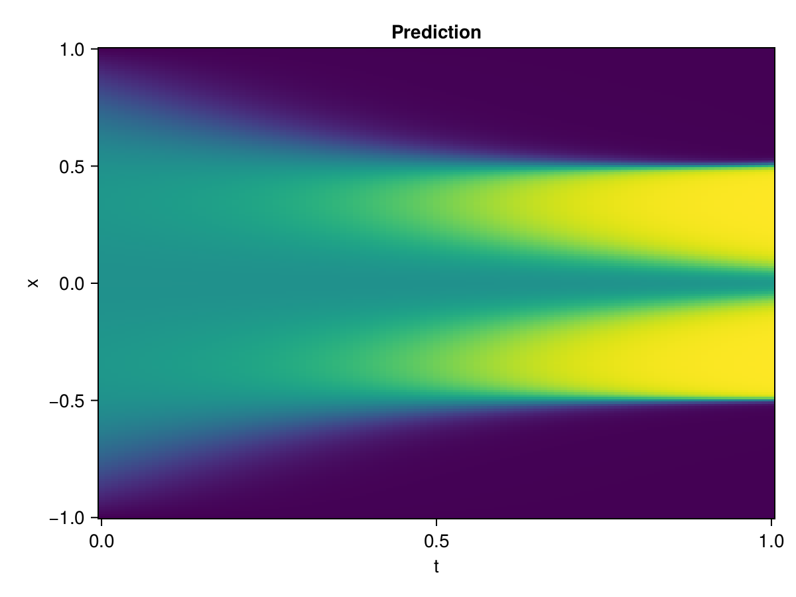

Allen-Cahn Equation with Sequential Training
In this tutorial we are going to solve the Allen-Cahn equation with periodic boundary condition from $t=0$ to $t=1$. The traning process is split into four stages, namely $t\in [0,0.25]$, $t\in [0.0,0.5]$, $t\in [0.0,0.75]$ and $t\in [0.0, 1.0]$.
using ModelingToolkit, IntervalSets
using Sophon
using Optimization, OptimizationOptimJL, Zygote
@parameters t, x
@variables u(..)
Dₓ = Differential(x)
Dₓ² = Differential(x)^2
Dₜ = Differential(t)
eq = Dₜ(u(x, t)) - 0.0001 * Dₓ²(u(x, t)) + 5 * u(x,t) * (abs2(u(x,t)) - 1.0) ~ 0.0
domain = [x ∈ -1.0..1.0, t ∈ 0.0..0.25]
bcs = [u(x,0) ~ x^2 * cospi(x),
u(-1,t) ~ u(1,t)]
@named allen = PDESystem(eq, bcs, domain, [x, t], [u(x, t)])\[ \begin{align} - 0.0001 \frac{\mathrm{d}}{\mathrm{d}x} \frac{\mathrm{d}}{\mathrm{d}x} u\left( x, t \right) + \frac{\mathrm{d}}{\mathrm{d}t} u\left( x, t \right) + 5 u\left( x, t \right) \left( -1 + \left|u\left( x, t \right)\right|^{2} \right) =& 0 \end{align} \]
Then we define the neural net, the sampler, and the training strategy.
chain = FullyConnected(2, 1, tanh; hidden_dims=16, num_layers=4)
pinn = PINN(chain)
sampler = QuasiRandomSampler(500, (300, 100))
strategy = NonAdaptiveTraining(1, (50, 1))
prob = Sophon.discretize(allen, pinn, sampler, strategy)OptimizationProblem. In-place: true
u0: ComponentVector{Float64}(layer_1 = (weight = [-0.9556580781936646 1.5738636255264282; -1.9408224821090698 1.941364049911499; … ; -1.8296685218811035 1.5072803497314453; 0.6045510768890381 1.504953145980835], bias = [0.0; 0.0; … ; 0.0; 0.0;;]), layer_2 = (weight = [0.5190312266349792 -0.3674710988998413 … -0.02227873168885708 0.44897177815437317; 0.558842658996582 0.6792020797729492 … 0.31599849462509155 -0.633134126663208; … ; -0.10935152322053909 -0.37360259890556335 … -0.39221104979515076 -0.604706883430481; 0.44889143109321594 0.567188560962677 … 0.2755849063396454 0.35471946001052856], bias = [0.0; 0.0; … ; 0.0; 0.0;;]), layer_3 = (weight = [0.289494127035141 0.4483444392681122 … -0.05014996603131294 0.24525144696235657; 0.18699504435062408 0.7190806865692139 … -0.16140279173851013 -0.035485055297613144; … ; -0.37762898206710815 0.37815988063812256 … 0.21893730759620667 0.08741046488285065; 0.6124138832092285 -0.3422277867794037 … -0.10327723622322083 -0.41570696234703064], bias = [0.0; 0.0; … ; 0.0; 0.0;;]), layer_4 = (weight = [-0.04399610683321953 0.3946402370929718 … 0.17701585590839386 -0.1395779699087143; -0.15291066467761993 0.3048178553581238 … 0.27375322580337524 -0.5867674350738525; … ; 0.4411472678184509 0.3558751344680786 … -0.08943247050046921 0.3722955882549286; -0.2822313904762268 0.06337461620569229 … 0.5085814595222473 -0.2165626585483551], bias = [0.0; 0.0; … ; 0.0; 0.0;;]), layer_5 = (weight = [-0.5374254584312439 -0.5397164225578308 … -0.06494977325201035 -0.21838214993476868], bias = [0.0;;]))We solve the equation sequentially in time.
function train(allen, prob, sampler, strategy)
bfgs = BFGS()
res = Optimization.solve(prob, bfgs; maxiters=2000)
for tmax in [0.5, 0.75, 1.0]
allen.domain[2] = t ∈ 0.0..tmax
data = Sophon.sample(allen, sampler)
prob = remake(prob; u0=res.u, p=data)
res = Optimization.solve(prob, bfgs; maxiters=2000)
end
return res
end
res = train(allen, prob, sampler, strategy)u: ComponentVector{Float64}(layer_1 = (weight = [-1.2422738592113538 0.9231212075660514; -2.0475827611804562 1.0553353383454331; … ; -2.8444390111237325 1.3203019094772859; -0.03623501757741651 1.420887090034504], bias = [-0.6029728366179484; -1.7061449422018755; … ; -0.05970969164589912; -0.028924168024778353;;]), layer_2 = (weight = [0.5454560407805262 -0.28026372994100734 … -0.06920345680919941 0.42837626686147323; 0.7163619082844223 1.0007166298814036 … 0.16362390354658038 -1.0639646459741587; … ; 0.05357350650553011 -0.2683116804284698 … -0.5280778093884722 -0.16819968637126004; 0.30721981284897654 0.8637760893028341 … 0.3474569954707465 -0.45305817508360313], bias = [-0.1872779841483975; -0.3546760448534173; … ; 0.4579684549051134; -0.0665714615000322;;]), layer_3 = (weight = [0.5950450919104316 0.18347365743769176 … -0.0886738653499011 0.3206596811519118; 0.2558478625597062 0.6101602981448241 … -0.4540170229982475 0.11445382978440327; … ; -0.4614473851754407 0.3652990167820569 … 0.37703520072473984 0.36777226277883135; 0.31169859481277423 -0.8696355023938287 … -0.3331418809719193 -0.4344203647298303], bias = [0.013219472005392027; 0.3055168603601229; … ; -0.09967903138172253; -0.31799471321980843;;]), layer_4 = (weight = [-0.019631896169240114 0.3581684335247211 … 0.08232656964102225 -0.751763189095566; -0.27117845194144535 0.4500858686876875 … 0.06013298091324377 -0.3839851645865872; … ; 0.41800120496470294 0.37519389292103583 … -0.13666813073677733 0.057466428564388536; 0.08252390015376512 -0.054366486141060086 … 0.5842212239259175 -0.5218230442944837], bias = [0.6512043943486703; 0.01599787797577549; … ; 0.103665083098678; 0.18632248975679944;;]), layer_5 = (weight = [-0.591276126267088 -0.8548435863880453 … -0.1466696086492229 -0.08785118701463145], bias = [-0.8190001990994419;;]))Let's plot the result.
using CairoMakie
phi = pinn.phi
xs, ts = [infimum(d.domain):0.01:supremum(d.domain) for d in allen.domain]
axis = (xlabel="t", ylabel="x", title="Prediction")
u_pred = [sum(pinn.phi([x, t], res.u)) for x in xs, t in ts]
fig, ax, hm = heatmap(ts, xs, u_pred', axis=axis)